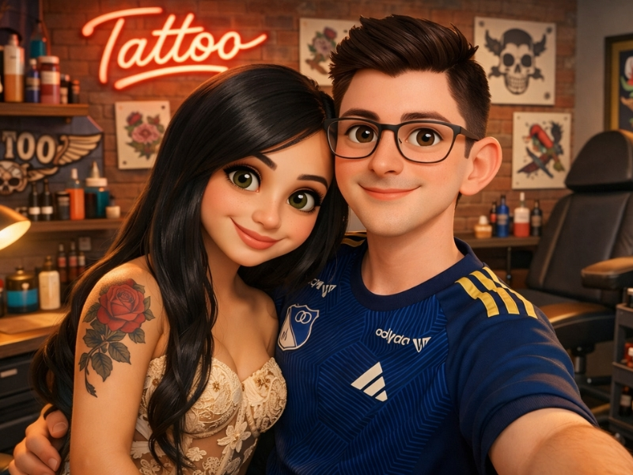
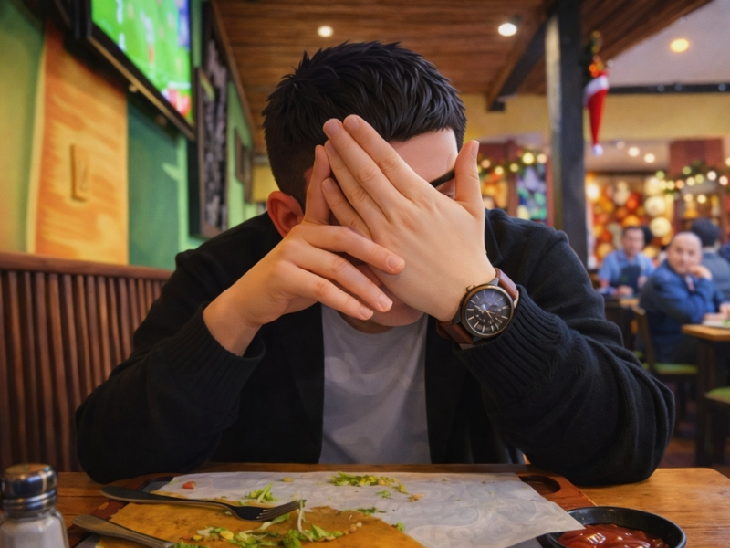
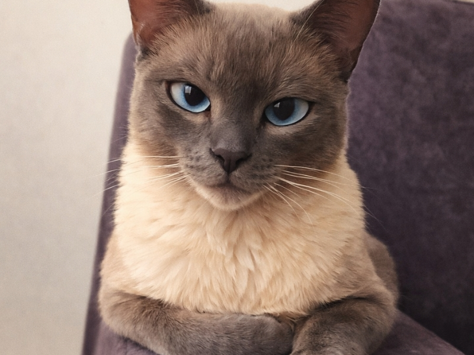
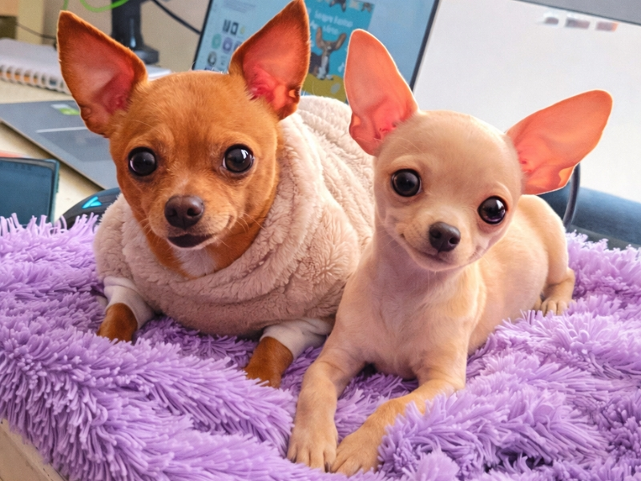

Escrita por David y Alix
Toca para abrir ▶

[Ilustración: Estudio de tatuajes]Hay personas que llegan a tu vida sin hacer ruido, sin promesas, sin advertencias. Simplemente aparecen.
Así fue la primera vez que sus caminos se cruzaron, en un estudio de tatuajes, entre tinta, miradas casuales y momentos que parecían cotidianos. No hubo fuegos artificiales ni declaraciones eternas. Solo dos vidas coincidiendo en el mismo lugar, sin saber que el destino estaba tomando nota.
Luego el tiempo siguió su curso. Los días se convirtieron en meses. Los meses en años. Y la vida continuó.
Pero el destino nunca olvida.
Era 25 de diciembre de 2023. Mientras el mundo celebraba la Navidad, ella tomó su celular y escribió algo sencillo, sin imaginar que cambiaría su historia para siempre: — Hola.
Ese mensaje fue pequeño… pero abrió una puerta enorme. Desde ese día no dejaron de hablar.
Las conversaciones se volvieron parte del día. Las risas llegaron sin esfuerzo. Las noches se hicieron cortas.
Y poco a poco, sin darse cuenta, empezaron a sentirse en casa el uno con el otro.
No pasó mucho tiempo antes de que ella decidiera ir a verlo.
La finca estaba frente al lago. El aire era tranquilo. El paisaje parecía pintado a mano.
Él la esperaba con su busito rojo y pantaloneta negra. Sencillo. Natural. Sonriendo.
Ese día no solo se encontraron dos personas. Se reencontraron dos almas que estaban listas para empezar algo nuevo.
Días después llegó el momento de dejarlo en la terminal de transportes. Él regresaba a Bogotá.
No era una despedida triste… pero sí era de esas que aprietan el corazón.
Porque cuando alguien empieza a importarte de verdad, cada distancia se siente más larga.
Sin embargo, algo dentro de ellos sabía que esto apenas comenzaba.

[Ilustración: Comiendo en Patacones]Ella viajó a visitarlo. Fueron a comer a “Patacones”, porque es su comida favorita.
Hablaron, rieron, se miraron distinto.
Y el 14 de enero de 2024, el mundo pareció detenerse por un segundo. Se dieron su primer beso.
No hubo música de fondo. Pero en sus corazones sonó como si todo el universo celebrara.
El 27 de febrero estaban viendo un partido de Millonarios en el estadio.
Entre la emoción, los goles y el ruido de la hinchada, tomaron una decisión más importante que cualquier marcador:
Ser novios.
Ese día no solo ganó su equipo. Ganó su historia.

[Ilustración: Llegada del gatito Blue]Tres meses después de hacerse novios, en mayo de 2024, el amor que sentían necesitaba más espacio para crecer. Así llegó Blue, un tierno gatito que se convirtió en su primer hijo de cuatro patas.
Con sus ronroneos y travesuras, Blue les enseñó lo que significaba cuidar de una vida juntos. Fue la primera pieza de esa gran familia que, sin saberlo, apenas comenzaban a formar.
Ese mismo mes de mayo, impulsados por el amor, tomaron la decisión más hermosa: irse a vivir juntos. En agosto, por fin se mudaron a su nuevo apartamento.
Los primeros días dormían en un colchón en el piso. No había sala ni muebles. Solo sueños, abrazos y unas inmensas ganas de construir algo propio.
Poco a poco empezaron a llegar sus cositas, y esas cuatro paredes comenzaron a sentirse como un verdadero hogar.

[Ilustración: Llegada de la perrita Mia]Con el nuevo apartamento listo, faltaba alguien muy especial para llenarlo de alegría. En ese mismo mes de agosto llegó Mia, la dulce perrita que ya era la adoración de Alix, pero que ahora se convertía en la hija de los dos.
Mia llenó cada rincón con sus ladridos de amor, sus juegos y su ternura infinita. Verla correr por la casa y adaptarse a su nueva vida junto a David y Blue hizo que el hogar estuviera verdaderamente completo.
El año se llenó de momentos inolvidables. En septiembre celebraron su primer Amor y Amistad juntos, reafirmando todo lo que sentían.
En diciembre vivieron su primera Navidad y Año Nuevo iluminando su propia casita. No era una mansión, pero era su reino.
Luego, en enero, viajaron a Las Palmeras en Villeta, disfrutando del sol, el descanso y guardando más recuerdos hermosos en el corazón.
Justo cuando pensaban que su hogar no podía estar más lleno de amor, en febrero de 2025 la vida los sorprendió con un nuevo integrante: el perrito Sam.
Llegó saltando a sus vidas, trayendo consigo una nueva ola de energía, caos del bueno y muchísima felicidad.
Con Sam, la familia de cinco finalmente estaba completa. Tres peluditos y dos humanos locamente enamorados, listos para comerse el mundo.
En marzo crearon su primer negocio juntos: DaliClic, su tienda de accesorios y joyería. Un sueño convertido en proyecto.
Luego viajaron a Medellín y Guatapé por el cumpleaños de David. Se quedaron en una cabaña frente al lago, mirando la imponente Piedra del Peñol.
Volvieron a celebrar cumpleaños. Viajaron al pueblo. Siguieron sumando momentos. Y cada año que pasa, se aman más que el anterior.
Desde aquel “Hola” hasta hoy, no han dejado de elegirse.
Sueñan con viajar por el mundo. Con casarse. Con tener su bebé soñado. Con su casa. Con su finquita. Con ver crecer su negocio.
Pero, sobre todo, sueñan con seguir caminando juntos.
Porque esta no es una historia perfecta. Es una historia real. Llena de decisiones valientes, abrazos sinceros y amor que crece cada día. Y lo más bonito… es que apenas está comenzando.
Hoy celebramos dos años de este hermoso camino que hemos decidido recorrer juntos. Dos años de risas, aprendizajes, sueños compartidos y abrazos que se sienten como hogar.
Solo le pido a la vida y a Dios que me permita pasar el resto de mis días a tu lado… soñando contigo, construyendo nuestros sueños paso a paso y alcanzando cada meta juntos, como el equipo que somos.
Deseo que siempre caminemos de la mano de Dios, que Él guíe nuestros pasos, fortalezca nuestro amor y nos enseñe a nunca soltarnos el uno al otro, incluso en los momentos difíciles.
Quiero cumplir nuestra promesa… llegar a viejitos, mirarnos con los mismos ojos llenos de amor y seguir eligiéndonos cada día, amándonos cada vez más profundo, más consciente, más fuerte.
Gracias por estos dos años maravillosos. Lo mejor de mi vida es compartirla contigo. 💕